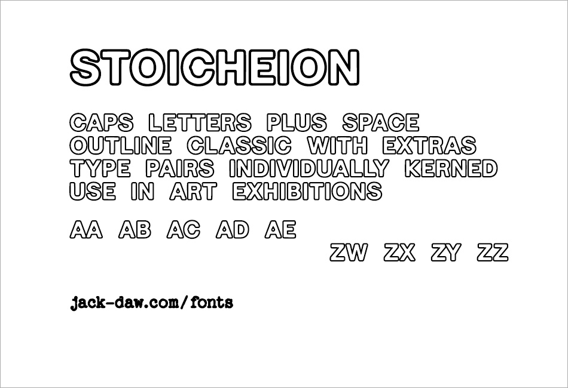

Inspirations were the ancient Greek "stoichedon" style and sans
fonts as reborn in the 18th century via Italy and John Soane,
then Caslon Egyptian, Akzidenz, Helvetica, etc., until today.
The glyphs have no spaces defined around them, the magic is all
in the kerning between them in the full 27x27 matrix (A-Z, space).
The general approach has been to make letters as beautiful as
possible and their pairs, too. Most glyphs have pretty common
shapes, except the tiny grip on the C and the drop in the A.
"Stoicheion" is the ancient Greek word for "letter", but also
for "element" and objects in the sky, i.e. quite fundamental
things, as mirrored in mythology where the god Hermes helped
the Three Fates to create the alphabet.
The font is the *.ttf and *.woff2 files, the rest is samples
and license/copyright info.